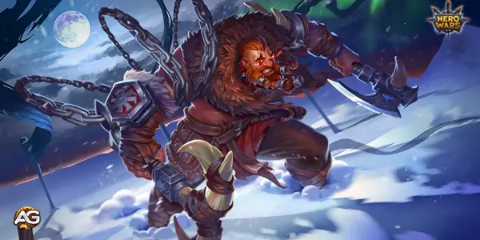
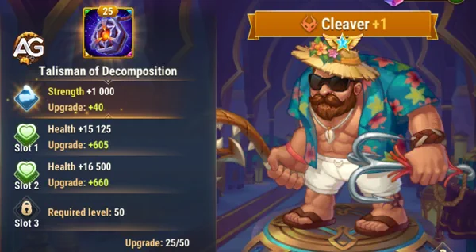
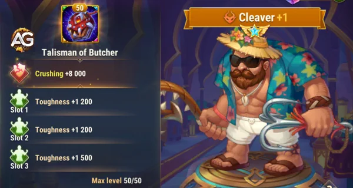
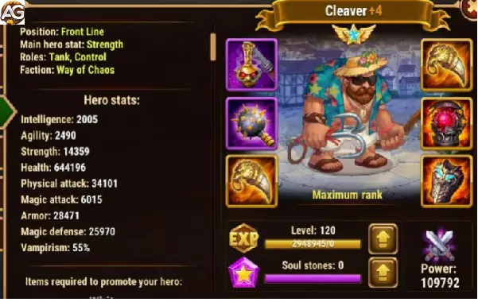

Machadinha sempre foi um herói muito difícil de conseguir, pois só é possível consegui-lo abrindo o baú heroico e adquiri-lo com número de estrelas absolutas que são 6. Com a nova atualização após abrir 400 baús heroicos, uma grande recompensa será entregue, e a primeira recompensa será o Machadinha as demais recompensas são super skins+.
| Posição | Linha de Frente |
|---|---|
| Função | Tanque, Controle |
| Estatística principal | Força |
| Facção | Caos |
| Como conseguir | Baú heroico |
| Tier List Geral: | S |
|---|---|
| Tier List de Hidra: | A |

Como um dos tanques da facção do Caos, Machadinha se torna um grande aliado para os novos heróis Aidan e Kayla formando forte times de arena, além de também ser ótimo em outros times.
Machadinha usa seu machado para puxar os inimigos que se posicionam na linha de fundo, tornado-os alvos fáceis de aniquilar, pois esses inimigos não têm defesa suficiente para ficarem na frende de um tanque, e isso de Machadinha um tanque muito temido para aqueles que não estão preparados para enfrentá-lo.
Como tanque, Machadinha é muito forte em Hero Wars Mobile e com certeza pode ser um forte aliado no seu time.
O Talismã Talismã da Decomposição do Machadinha no Hero Wars Alliance é uma peça crucial para impulsionar o poder do herói Machadinha, proporcionando aumentos significativos nas estatísticas de Força e Vida. Essa adição estratégica não apenas amplia a durabilidade do Machadinha no campo de batalha, mas também intensifica seu impacto ofensivo.
Ao equipar o Talismã do Machadinha, o jogador experimentará um notável aumento nas estatísticas de Força e Vida. Essa melhoria não apenas fortalece a capacidade de causar dano do herói, mas também aumenta sua resistência, tornando-o mais resiliente diante dos ataques inimigos. A combinação desses benefícios contribui para uma presença mais robusta do Machadinha nos confrontos.
Além disso, o ganho adicional de Força proveniente do Talismã é especialmente valioso, pois esse aumento tem sinergia com a habilidade passiva violeta do Machadinha. Isso resulta em uma sinergia única, onde cada ponto adicional de Força não apenas fortalece seus ataques físicos, mas também se reflete em um aumento correspondente em Vida. Esse ciclo de fortalecimento mútuo cria uma espiral ascendente de poder para o Machadinha.
Ao potencializar o ganho de força e vida, o Talismã do Machadinha contribui para a otimização de todas as habilidades do herói. Isso significa que, à medida que o Machadinha se torna mais poderoso, suas habilidades ativas e passivas se beneficiam proporcionalmente, resultando em um desempenho global mais impactante e eficaz em combate.
| Slot | Estatística | Pontos |
|---|---|---|
| 0 | Força | +2000 |
| 1 | Vida | +60500 |
| 2 | Vida | +60500 |
| 3 | Vida | +60500 |

Em resumo, o Talismã da Decomposição do Machadinha desempenha um papel fundamental no aprimoramento do herói, oferecendo aumentos substanciais nas estatísticas de Força e Vida. Com sua capacidade única de reforçar a Força e potencializar todas as habilidades do Machadinha, esse talismã se torna uma escolha estratégica valiosa para aqueles que buscam maximizar o poder desse formidável guerreiro no universo do Hero Wars Alliance.
O Talismã do Açougueiro de Machadinha é um artefato poderoso que aprimora as capacidades de seu portador em combate. Este talismã concede ao Machadinha a estatística Esmagamento e fornece três espaços adicionais de Resistência, que podem ser ainda mais aprimorados por meio da mecânica de Reroll. Esses atributos tornam o Talismã do Açougueiro de Machadinha uma ferramenta essencial para qualquer herói que deseja dominar o campo de batalha.
Esmagamento é uma estatística única que aumenta todo o dano causado a inimigos com pouca vida. Esse efeito se aplica a todos os tipos de dano, incluindo Físico, Mágico e Puro. No entanto, ele não afeta a perda de vida causada por habilidades aliadas. A fórmula para calcular o aumento de dano é a seguinte: (Esmagador / (Esmagador + estatística principal do alvo)) × 100%. Isso significa que, quanto maior a estatística de Esmagador, mais dano o herói pode infligir em inimigos enfraquecidos, facilitando sua eliminação.
Além de Esmagamento, o Talismã do Açougueiro de Machadinha também fornece Resistência. Essa estatística reduz todo o dano recebido de inimigos quando a vida do herói está baixa. Assim como Esmagador, Dureza se aplica a todos os tipos de dano (Físico, Mágico e Puro), mas não afeta a perda de vida causada por habilidades aliadas. A fórmula para determinar a porcentagem de redução de dano é: (Dureza / (Dureza + estatística principal do inimigo)) × 100%. Isso significa que, quanto maior a estatística de Dureza, mais dano o herói pode suportar quando sua vida está criticamente baixa, aumentando sua sobrevivência em batalhas intensas.
A combinação de Esmagador e Dureza torna o Talismã do Açougueiro de Machadinha um artefato versátil e poderoso. Ele não apenas melhora as capacidades ofensivas do herói, mas também oferece benefícios defensivos cruciais. Os três espaços adicionais de Dureza podem ser aprimorados ainda mais com a mecânica de Reroll, permitindo que os jogadores personalizem o talismã de acordo com seu estilo de jogo e estratégia. Seja para causar dano massivo a inimigos enfraquecidos ou para sobreviver por mais tempo em lutas difíceis, o Talismã do Açougueiro de Machadinha é um recurso inestimável.

Nos glifos de Machadinha priorize Armadura e depois suba de nível vida e força para melhorar sua habilidade Podridão e dar mais sobrevivência, por último defesa mágica e ataque físico.
Nos Artefatos de Machadinha deve-se priorizar o Livro para ganhar armadura e defesa mágica, depois o Anel para ganhar mais vida e ataque físico, por último Arma, mesmo sendo armadura para o time todo depende de ser ativada para funcionar e pode levar tempo.
As skins do Machadinha devem ser melhoradas de forma a maximizar sua durabilidade e potencial de dano. A nova skin de Resistência é uma adição crucial, pois fornece uma redução significativa de dano quando a vida do Machadinha está baixa. Isso o torna muito mais difícil de derrotar, especialmente em batalhas prolongadas.
Priorize a melhoria da Armadura primeiro para aumentar a sobrevivência do Machadinha contra ataques físicos. Em seguida, evolua a Vida para aprimorar ainda mais suas habilidades como tanque. Depois, evolua a Força, pois ela aumenta tanto a vida quanto o ataque físico, tornando o Machadinha mais eficaz em combate.
A skin de Skin de Resistência deve ser aprimorada em seguida, pois seu efeito de redução de dano garante que o Machadinha permaneça mais tempo na luta, especialmente contra ataques de alto dano explosivo. Depois disso, melhore a Defesa Mágica para mitigar ameaças mágicas e, por fim, aumente o Ataque Físico para potencializar sua ofensiva.

Machadinha não é um grande herói contra as hidras, mas como um tanque forte e resistente pode ajudar seu time enquanto você não tem um time meta de hidra.
Escolha seu time de acordo com a situação e a estratégia que melhor se adequam ao seu estilo de jogo e às demandas da batalha. Experimente diferentes combinações e adapte sua equipe conforme necessário para alcançar a vitória com Machadinha!
Em essência, o Machadinha personifica força, resiliência e destreza estratégica no universo de Hero Wars Alliance. Sua obtenção pode ser árdua, mas as recompensas de dominar esse formidável guerreira são incomparáveis. Ao aproveitar as habilidades e sinergias da Machadinha, juntamente com o uso estratégico do Talismã da Machadinha, os jogadores podem desbloquear todo o seu potencial e liderar sua equipe rumo à vitória.
Ao embarcar em sua jornada com o Machadinha, lembre-se de que a maestria vem com prática, adaptação e um profundo entendimento de seus pontos fortes e fracos. Com perseverança e astúcia estratégica, a Machadinha certamente se tornará um pilar de sua equipe, impulsionando você em direção ao triunfo na paisagem sempre competitiva de Hero Wars Alliance.
Portanto, equipe-se com conhecimento, aprimore suas habilidades e aceite o desafio de dominar o Machadinha. Pois no final, a vitória aguarda aqueles que ousam empunhar o poder dessa heroína indomável.
Você está pronto para dominar o Machadinha e dominar o campo de batalha?
Você gostou das nossas dicas do Guia do Machadinha? Há algo que não entendeu ou gostaria de sugerir mudanças? Convidamos você a se juntar à nossa sessão de comentários na página do Alexandre Games Blog. Não hesite em expressar sua opinião, clarificar suas dúvidas e compartilhar sua sugestões.
Clique no botão abaixo para começar:
 Aidan
Aidan Kayla
Kayla Xe'sha
Xe'sha